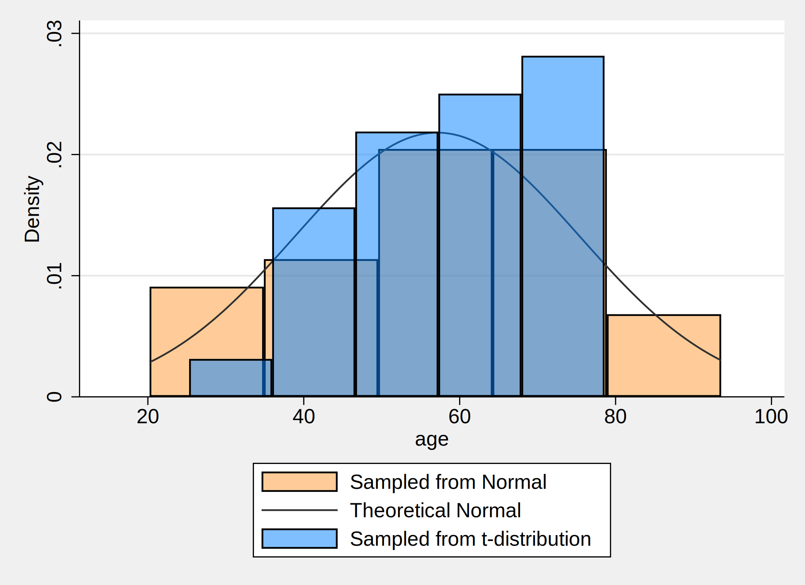

A user initialized a dataset with 30 observations. Distribution of $${Age, years \sim Normal ; (\mu=57,\sigma^2=225)}$$
. *1. data simulation
. set obs 30 //initialize your dataset with 30 observations usin the command
. *2. variable generation
. gen age=(rnormal()*15)+57 //normal distribution
. gen age_t=(rt(_N)*15)+57 //instead of normal distribution, t-distribution, _N means degrees of freedom
. *3. Graphical representation
. hist age, ///
> fcolor(orange%40) /// simulated normal
> addplot(hist age_t, fcolor(midblue%50)) /// simulated t-distribution
> normal /// theoretical normal
> legend(on ///
> lab(1 "Sampled from Normal") ///
> lab(2 "Theoretical Normal") ///
> lab(3 "Sampled from t-distribution") ///
> )
. graph export histogram_age_age_t.png, replace

**Results:**
From the normal distribution,
results. There were 30 observations and 2 variables in the analyzed dataset. Average life expectancy of all countries, $\beta_0$, was years. Difference in life expectancy among <u>adjacent</u> countries, $\beta_1$, showed no trend or pattern and was years, essentially $zero$, and $p$ =
**Conclusions:**
In walking you through syntax, do-file creation, queued commands, generated results, through to embedding neatly formatted output in
.html, we believe you now have a sense of what that Stata might offer you. These ideas can be generalized to embedding results
in .xlsx, .log, .dta, .docx, etc.